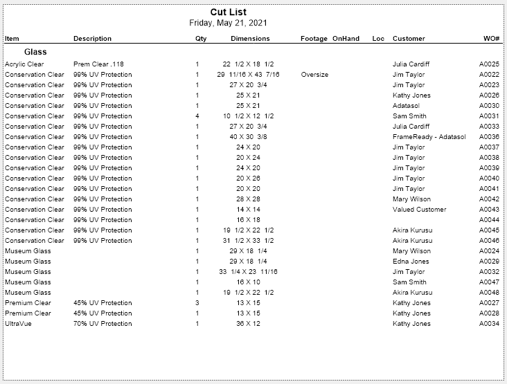
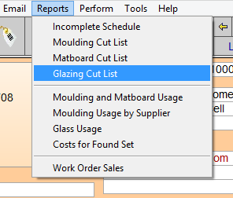
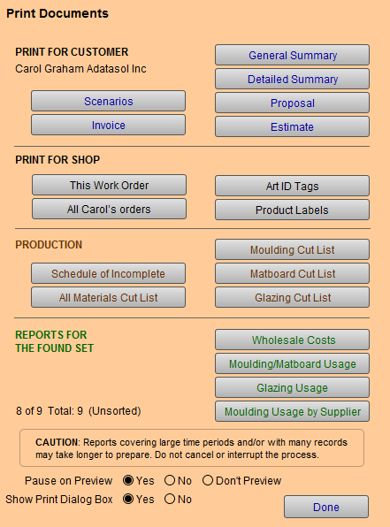

Glazing Cut List
A cut list for glazing with all dimensions, footage, on hand quantities, location, and related work order information.
-
Listed alphabetically by glazing type
Example Print Preview

How to Print a Glazing Cut List
Caution: This report uses your Found Set. If your Found Set is "all records," then FrameReady includes all Work Orders; this may take a long time to process.
-
Go to the specific Work Order you need to print, or perform a Find for the Work Orders you wish included in this report.
-
Click the Print Documents button and then go to Step 3.
Or, in either the Form View or List View, go to the menu bar at the top of the screen, click Reports and select Glazing Cut List and then proceed to Step 5.

-
The Print Documents window appears.

-
Click the Glazing Cut List button.
Caution: This process will use your Found Set! -
A print preview of the document appears. Click Continue or Save as PDF.
Caution: when used with a large date range this report may take time to generate.
© 2023 Adatasol, Inc.